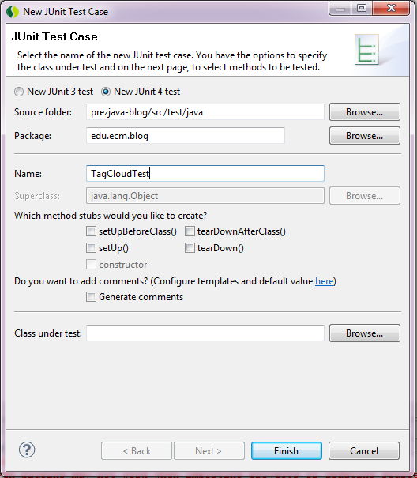
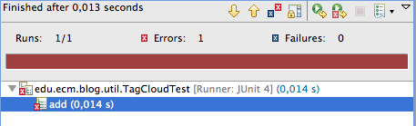
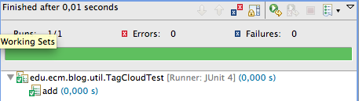

JUnit est une librairie pour les tests unitaires créée par Kent Beck et Erich Gamma.
Elle permet d'écrire simplement des tests unitaires qui valide le fonctionnement du code qui ira par la suite en production.
public class PersonTest {
@Test
public void fullname() {
Person person = new Person("John", "Doe");
Assert.assertEquals("fullname is incorrect", person.getFullname(), "John Doe");
}
}
Elle est d'autant plus intéressant lorsqu'elle est utilisée comme outils d'aide à la conception.
Nous allons partir du projet maven qui a été généré dans le tp maven et stocké sous github
Ce projet ne contient pas grand chose pour le moment mais il dispose au moins d'une structure de répertoires.
Après un mvn eclipse:eclipse, on importe ce projet sous eclipse.
Il est recommandé de faire des commits git et des pushs aussi souvent que nécessaire.
Avant de commencer à décrire ce que l'on veut faire, nous allons mettre à jour la version de junit utilisér dans le pom.xml
<dependency> <groupId>junit</groupId> <artifactId>junit</artifactId> <version>4.8.2</version> <scope>test</scope> </dependency>
La version 4 de junit supporte les annotations qui permettent d'écrire les test plus simplement.
On regénère ensuite le projet avec mvn eclipse:eclipse et on rafraîchit le projet sous eclipse afin que cette modification soit bien prise en compte par eclipse.
Nous allons ajouter une classe TagCloud dans le package edu.ecm.blog.util
public class TagCloud {
}
Cette classe nous servira plus tard lorsque nous constuirons notre application web.
Voici ce que nous voudrions qu'elle fasse pour le moment :
Nous allons rajouter tout cela en passant par des tests unitaires.
Par convention, une classe de test porte le nom de la classé testée, suffixée par "Test".
On ajoute le test JUnit (New > JUnit Test Case) TagCloudTest dans le package edu.ecm.blog.util mais coté sources de test.
Nous allons commencer pas la méthode add.
public class TagCloudTest {
@Test
public void add() {
TagCloud tagCloud = new TagCloud();
tagCloud.add("java");
}
}
On exécute le test en faisant un click droit sur la classe Run As > JUnit Test.
Actuellement, ce test ne passe pas car la méthode add n'existe pas. Il suffit donc de la créer.
public class TagCloud {
public void add(String tag) {
}
}

Elle ne fait rien, mais le test passe. Ajoutons un autre test.
@Test
public void size() {
TagCloud tagCloud = new TagCloud();
tagCloud.add("java");
Assert.assertEquals(1, tagCloud.size());
}
Nous pourrions implémenter cette méthode avec un simple compteur incrémenté lors de l'appel de add(). Nous allons plutôt utiliser une List dès a présent.
public class TagCloud {
private List<String> tags = new ArrayList<String>();
public void add(String tag) {
tags.add(tag);
}
public int size() {
return tags.size();
}
}
Avec ce code, les 2 tests passent.
Afin de pouvoir écrire plus facilement nos tests, nous allons ajouter une méthode add(String...).
A partir de maintenant, seuls les tests seront décrit ici, l'implémentation étant libre.
@Test
public void addMutiple() {
TagCloud tagCloud = new TagCloud();
tagCloud.add("java", "ruby", "python");
}
Sans oublier de tester les cas limites.
@Test
public void addEmpty() {
TagCloud tagCloud = new TagCloud();
tagCloud.add();
}
@Test
public void addNull() {
TagCloud tagCloud = new TagCloud();
tagCloud.add((String[]) null);
}
Actuellement, nous pouvons avoir plusieurs fois le même tag. Nous ajoutons donc une méthode contains.
@Test
public void contains() {
TagCloud tagCloud = new TagCloud();
tagCloud.add("java");
Assert.assertTrue(tagCloud.contains("java"));
}
On modifie le test size() afin de vérifier que le même tag ne compte pas 2 fois.
@Test
public void size() {
TagCloud tagCloud = new TagCloud();
tagCloud.add("java", "java", "python");
Assert.assertEquals(2, tagCloud.size());
}
De même, les tags vides ou null ne devraient pas compter.
@Test
public void size() {
TagCloud tagCloud = new TagCloud();
tagCloud.add("java", "java", "python", "", null);
Assert.assertEquals(2, tagCloud.size());
}
Lorsque nous utiliserons notre tagCloud, il se peut qu'il y ait des centaines de tags définis et nous voudrons en afficher qu'un jeu réduit.
@Test
public void top() {
TagCloud tagCloud = new TagCloud();
tagCloud.add("java", "ruby", "python", "c#", "groovy");
tagCloud.top(3);
Assert.assertEquals(3, tagCloud.size());
}
Avec les conditions aux limites.
@Test
public void topTooFew() {
TagCloud tagCloud = new TagCloud();
tagCloud.add("java");
tagCloud.top(3);
Assert.assertEquals(1, tagCloud.size());
}
@Test
public void topNegative() {
TagCloud tagCloud = new TagCloud();
tagCloud.add("java");
tagCloud.top(-2);
Assert.assertEquals(0, tagCloud.size());
}
On note qu'écrire les tests unitaires fixe le fonctionnement de notre code de façon complètement arbitraire, bien au délà du design initial.
Afin de profiter malgré tout du volume de tags alors qu'on en affiche qu'un sous ensemble, nous allons mélanger notre tagCloud.
@Test
public void shuffle() {
TagCloud tagCloud = new TagCloud();
tagCloud.add("java", "ruby", "python", "c#", "groovy");
tagCloud.shuffle();
Assert.assertEquals(5, tagCloud.size());
Assert.assertTrue(tagCloud.contains("java"));
}
On pourrait réfléchir à un algorithme pour cette méhtode, mais java.util.Collections.shuffle() l'a déjà fait pour nous.
Nous avons ici un problème interessant pour nos test unitaires : comment tester le résultat d'un traitement aléatoire ?
Comme il n'y a pas de solution simple, nous nous contentons de tester la taille et le contenu.
Une solution consisterait à reposer sur un algorithme paramétrable et configuré spéciquement pour notre test. Le test unitaire aurait pour but de vérifier que la classe TagCloud reposer bien sur cet algorithme.
Nous pourrions ajouter d'autres méthodes mais nous attendrons d'avoir une vision plus claire de notre besoin avant.